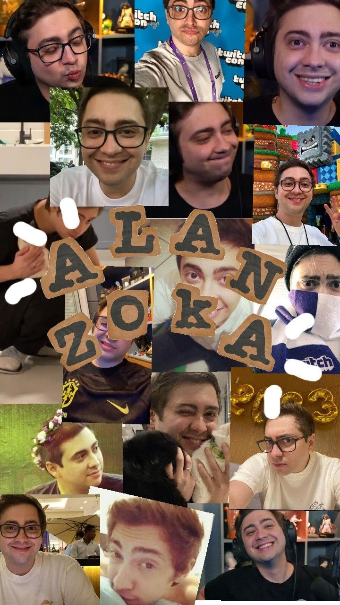

curadoria
seleção contínua dos melhores momentos
Uma galeria de mídia imersiva com curadoria da comunidade para celebrar os melhores momentos do Alanzoka.
curadoria
seleção contínua dos melhores momentos
imersão
visual cinematográfico com ritmo editorial
comunidade
conteúdo feito por quem acompanha de verdade
quem é alanzoka
Alan Ferreira Pereira (São Paulo, 13 de maio de 1990), mais conhecido como Alanzoka, considerado um dos maiores streamers da plataforma Twitch no país.
Formado em Gastronomia pela Universidade Anhembi Morumbi, estabeleceu-se como um youtuber no ano de 2011 em seu canal "EDGE", sigla para Electronic Desire Gamers Entertainment. Seu primeiro vídeo foi de Minecraft, mas foram jogos co-op e de terror, como Slender: The Eight Pages, Amnesia: The Dark Descent e Dead Space 2, que impulsionaram seu reconhecimento em 2012. Após renomear seu canal para "alanzoka", iniciou sua carreira na Twitch e começou a gravar vídeos de Five Nights at Freddy's e Fortnite.

melhores clipes
Passe o cursor para ver o preview e clique para abrir em tela expandida.
sobre o projeto
Oi, tudo bom? Me chamo Sérgio e sou o admin do Clipszoka desde o início. Em 2021, no meio de uma fase complicada, as lives e vídeos do Alan foram um ponto de leveza. Esse projeto nasceu como forma de compartilhar essa mesma alegria com outras pessoas.
parcerias
Plataformas e iniciativas que fortalecem a experiência da comunidade.
continue acompanhando
Se quiser, continue com a gente no X para acompanhar novos cortes, momentos marcantes e atualizações do projeto.